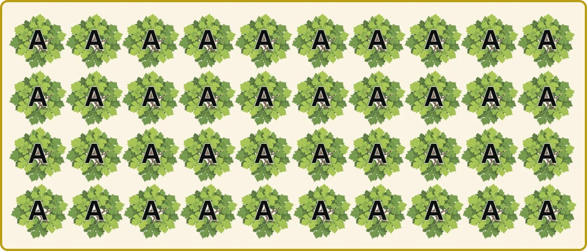
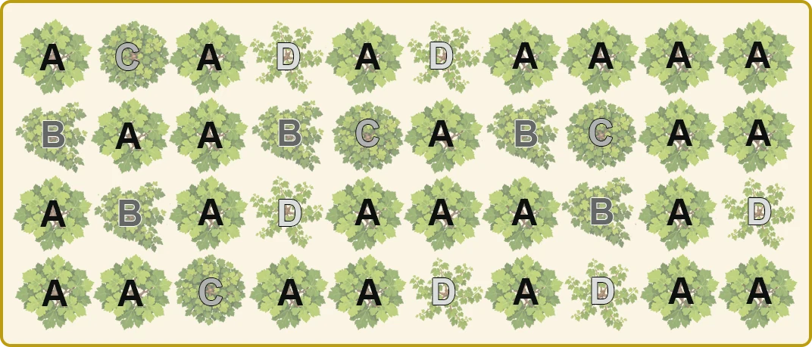

La vigne & le vignoble · Chapitre 4
Planter une vigne, c’est s’engager pour trente, cinquante ans ou davantage. Chaque choix fait ce jour-là — porte-greffe, cépage, densité, palissage — pèsera sur des dizaines de millésimes.
Avant de planter, le vigneron prépare le terrain : arrachage de l’ancienne vigne, repos du sol, défoncement profond, drainage si nécessaire, amendements après analyse. Puis vient une série de décisions, presque toutes irréversibles, que les cahiers des charges des appellations encadrent strictement.
Before planting, the grower prepares the ground: uprooting the old vineyard, resting the soil, deep ripping, drainage if needed, soil improvement after analysis. Then comes a series of decisions, nearly all irreversible, that appellation specifications regulate strictly.
Une vigne neuve ne donne pas de vin d’appellation avant sa troisième feuille, et ne trouve sa pleine maturité qu’après une dizaine d’années.
A new vineyard yields no appellation wine before its third leaf, and only reaches full maturity after about ten years.
Depuis le phylloxéra, la vigne française est presque toujours faite de deux plantes : un porte-greffe américain, qui fournit les racines résistantes, et un greffon de Vitis vinifera, qui porte le cépage.
Le porte-greffe se choisit d’abord selon le sol : sa teneur en calcaire, sa réserve en eau et sa fertilité. Il influence aussi la vigueur de la vigne et la date de maturité.
| Porte-greffe | Parents | Vigueur | Calcaire actif toléré | Sécheresse | En bref |
|---|---|---|---|---|---|
| Riparia Gloire de Montpellier | V. riparia | 6 % | Avance la maturité ; sols profonds et frais. | ||
| 101-14 MGt | riparia × rupestris | 9 % | Précoce, faible vigueur ; sols argileux et frais. | ||
| 3309 C | riparia × rupestris | 11 % | Très répandu, qualitatif ; craint la sécheresse. | ||
| 420 A MGt | berlandieri × riparia | 20 % | Faible vigueur, maturité régulière ; Bordelais, Bourgogne. | ||
| SO4 | berlandieri × riparia | 17 % | Longtemps le plus planté ; vigoureux, risque de coulure. | ||
| 161-49 C | riparia × berlandieri | 25 % | Sols calcaires de Bourgogne et Champagne. | ||
| 41 B MGt | Chasselas × berlandieri | 40 % | Champion des sols très calcaires : Champagne, Cognac. | ||
| Fercal | berlandieri × hybride | 40 % | Tolérance au calcaire parmi les plus élevées. | ||
| 110 R | berlandieri × rupestris | 17 % | Résiste bien à la sécheresse ; Midi. | ||
| 1103 P | berlandieri × rupestris | 17 % | Vigoureux et résistant au sec. | ||
| 140 Ru | berlandieri × rupestris | 20 % | Très vigoureux, le plus résistant au sec. |
À l’intérieur d’un même cépage, les pieds ne sont pas tous identiques. Deux façons de choisir les plants à multiplier :
Toutes les vignes descendent d’un seul pied d’élite, sélectionné et contrôlé : elles sont identiques.

Le vigneron prélève des bois sur de nombreux pieds choisis dans ses vieilles vignes : la nouvelle parcelle garde leur diversité.

A, B, C, D : des pieds aux caractères différents (vigueur, taille des grappes, maturité…).
Plus les pieds sont serrés, moins chacun porte de raisins, plus ses racines descendent profond et plus le vin gagne souvent en concentration. Mais une vigne étroite coûte plus cher à planter et à travailler.
Piquets et fils soutiennent la vigne, guident les rameaux vers le haut et forment un mur de feuilles bien exposé. Les modes de conduite et la taille sont détaillés au chapitre 5.
Avec l’âge, une vigne produit moins mais mieux : ses racines profondes l’affranchissent des caprices de la météo, ses raisins gagnent en concentration. Courbes indicatives.